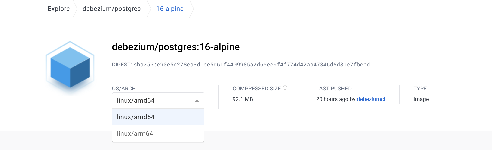

Debezium: PostgreSQL Change Data Capture (CDC)
·
System Wisdom·
#System Design
#Database 7 min read
7 min read
Figure 1: Debezium Postgres Connector
1. Goal
Set up Debezium to capture row-level changes in the schemas of a PostgreSQL database and publish to Kafka topic(s).
The high-level architecture is unquestionably explained in the above diagram üòé. Pikachu, aka Debezium PostgreSQL Connector, detects and carries/publishes row-level change events to Kafka topic(s) for configured Postgres tables.
2. Definitions
2.1. Change Data Capture (CDC)
In databases, change data capture (CDC) is a set of software design patterns used to determine and track the data that has changed (the "deltas") so that action can be taken using the changed data [1].
2.2. Debezium
Debezium is a set of distributed services to capture changes in your databases so that your applications can see those changes and respond to them. Debezium records all row-level changes within each database table in a change event stream, and applications simply read these streams to see the change events in the same order in which they occurred [2].
2.3. Debezium Connectors
A library of connectors that capture changes from a variety of database management systems and produce events with very similar structures, making it far easier for your applications to consume and respond to the events regardless of where the changes originated [3].
2.4. Debezium connector for PostgreSQL
The Debezium PostgreSQL connector captures row-level changes in the schemas of a PostgreSQL database [4].
2.5. Kafka
Apache Kafka is a distributed data store optimized for ingesting and processing streaming data in real-time. Streaming data is data that is continuously generated by thousands of data sources, which typically send the data records in simultaneously [5].
2.6. Kafka Connect
Kafka Connect is a tool for scalably and reliably streaming data between Apache Kafka and other systems. It makes it simple to quickly define connectors that move large collections of data into and out of Kafka [6].
3. Define Services (Docker-Compose)
As a generate note, If you use Mac M1/M2, ensure the docker image has linux/arm64 OS/ARCH.

Section 3.x covers the breakdown of each service/docker image used in docker-compose.yaml file, if you have worked with docker before, skip the section and pick up the entire file from section 4 instead.
Break down of services in docker-compose.yaml
Postgres: The database containing the table(s) for which CDC is tracked.
Kafka and Zookeeper: The event broker where CDC events are stored.
Schema Registry: To serialize/deserialize CDC message(s) using Avro schema.
Debezium: Responsible for capturing the row-level changes made to Postgres table(s) and streaming them to a Kafka topic.
3.1. PostgreSQL
debezium/postgres: PostgreSQL for use with Debezium change data capture. This image is based upon postgres along with logical decoding plugin from Debezium
dpage/pgadmin4 (Optional): Web browser version of pgAdmin 4 for the ease of running DML and DDL operations on PostgreSQL.
postgres:
image: debezium/postgres:13-alpine
ports:
- 5432:5432
environment:
- POSTGRES_USER=admin
- POSTGRES_PASSWORD=root
- POSTGRES_DB=pyblog
pgadmin:
image: dpage/pgadmin4
environment:
- PGADMIN_DEFAULT_EMAIL=admin@admin.com
- PGADMIN_DEFAULT_PASSWORD=root
ports:
- '5050:80'
restart: always
3.2. Kafka and Zookeeper
Confluent Platform Docker images for Kafka: confluentinc/cp-enterprise-kafka/postgres and Zookeeper: confluentinc/cp-zookeeper. The below example is for version 7.3, a more recent version, i.e., 7.5 onwards, Confluent recommends KRaft mode for new deployments, and Zookeeper is deprecated.
zookeeper:
image: confluentinc/cp-zookeeper:7.3.5
environment:
ZOOKEEPER_CLIENT_PORT: 2181
kafka:
image: confluentinc/cp-enterprise-kafka:7.3.5
depends_on: [zookeeper]
environment:
KAFKA_BROKER_ID: 1
KAFKA_ZOOKEEPER_CONNECT: zookeeper:2181
KAFKA_ADVERTISED_LISTENERS: PLAINTEXT://kafka:9092
KAFKA_LISTENER_SECURITY_PROTOCOL_MAP: PLAINTEXT:PLAINTEXT,PLAINTEXT_HOST:PLAINTEXT
KAFKA_INTER_BROKER_LISTENER_NAME: PLAINTEXT
KAFKA_OFFSETS_TOPIC_REPLICATION_FACTOR: 1
KAFKA_JMX_PORT: 9991
ports:
- 9092:9092
3.3. Debezium and Schema Registry
debezium/connect image defines a runnable Kafka Connect service preconfigured with all Debezium connectors; it monitors database management system(s) for changing data and then forwards those changes directly into Kafka topics organized by server, database, and table.
confluentinc/cp-schema-registry enables client applications to read and write Avro data, in this case, to serialize and deserialize CDC messages.
debezium:
image: debezium/connect:2.4
environment:
BOOTSTRAP_SERVERS: kafka:9092
GROUP_ID: 1
CONFIG_STORAGE_TOPIC: connect_configs
OFFSET_STORAGE_TOPIC: connect_offsets
STATUS_STORAGE_TOPIC: my_status_topic
CONNECT_KEY_CONVERTER_SCHEMA_REGISTRY_URL: http://schema-registry:8085
CONNECT_VALUE_CONVERTER_SCHEMA_REGISTRY_URL: http://schema-registry:8085
depends_on: [kafka]
ports:
- 8083:8083
schema-registry:
image: confluentinc/cp-schema-registry:7.3.5
environment:
- SCHEMA_REGISTRY_KAFKASTORE_CONNECTION_URL=zookeeper:2181
- SCHEMA_REGISTRY_HOST_NAME=schema-registry
- SCHEMA_REGISTRY_LISTENERS=http://schema-registry:8085,http://localhost:8085
ports:
- 8085:8085
depends_on: [zookeeper, kafka]
4. Start Services (Docker-Compose)
The complete docker-compose.yaml to set up Postgres with debezium and publish data change events to Kafka:
Note: At the time of writing this post, the services use the current stable version(s); visit the docker hub page for the latest stable version(s).
version: "3.7"
services:
postgres:
image: debezium/postgres:13-alpine
ports:
- 5432:5432
environment:
- POSTGRES_USER=admin
- POSTGRES_PASSWORD=root
- POSTGRES_DB=pyblog
pgadmin:
image: dpage/pgadmin4
environment:
- PGADMIN_DEFAULT_EMAIL=admin@admin.com
- PGADMIN_DEFAULT_PASSWORD=root
ports:
- '5050:80'
restart: always
zookeeper:
image: confluentinc/cp-zookeeper:7.3.5
environment:
ZOOKEEPER_CLIENT_PORT: 2181
kafka:
image: confluentinc/cp-enterprise-kafka:7.3.5
depends_on: [zookeeper]
environment:
KAFKA_BROKER_ID: 1
KAFKA_ZOOKEEPER_CONNECT: zookeeper:2181
KAFKA_ADVERTISED_LISTENERS: PLAINTEXT://kafka:9092
KAFKA_LISTENER_SECURITY_PROTOCOL_MAP: PLAINTEXT:PLAINTEXT,PLAINTEXT_HOST:PLAINTEXT
KAFKA_INTER_BROKER_LISTENER_NAME: PLAINTEXT
KAFKA_OFFSETS_TOPIC_REPLICATION_FACTOR: 1
KAFKA_JMX_PORT: 9991
ports:
- 9092:9092
debezium:
image: debezium/connect:2.4
environment:
BOOTSTRAP_SERVERS: kafka:9092
GROUP_ID: 1
CONFIG_STORAGE_TOPIC: connect_configs
OFFSET_STORAGE_TOPIC: connect_offsets
STATUS_STORAGE_TOPIC: my_status_topic
CONNECT_KEY_CONVERTER_SCHEMA_REGISTRY_URL: http://schema-registry:8085
CONNECT_VALUE_CONVERTER_SCHEMA_REGISTRY_URL: http://schema-registry:8085
depends_on: [kafka]
ports:
- 8083:8083
schema-registry:
image: confluentinc/cp-schema-registry:7.3.5
environment:
- SCHEMA_REGISTRY_KAFKASTORE_CONNECTION_URL=zookeeper:2181
- SCHEMA_REGISTRY_HOST_NAME=schema-registry
- SCHEMA_REGISTRY_LISTENERS=http://schema-registry:8085,http://localhost:8085
ports:
- 8085:8085
depends_on: [zookeeper, kafka]
4.1. Run all containers
Clean-up (Optional) and Run (Create and Start) containers:
docker rm -f $(docker ps -a -q)
docker-compose up -d
Make a note of the assigned network name; from the above output, the network name is: enricher_default. To create a custom network, refer Networking in Compose
5. Configure Services
End-to-end configuration for all the services to create the CDC pipeline:
5.1. Create Postgres Tables
a. Login to pgAdmin localhost:5050 with email/password (admin@admin.com/root) configured in pgadmin container (refer: docker-compose.yaml)
b. Register database server with username/password (admin/root) and hostname (postgres) configured in postgres container (refer: docker-compose.yaml)
c. Create and Alter table queries:
Example: Create a table user-profile from the query tool to track data change events in this table. Skip this; if you already have your own schema for Postgres database tables for which CDC has to be configured.
CREATE TABLE user_profile (
user_id INT NOT NULL,
full_name VARCHAR(64) NOT NULL,
email VARCHAR(255) NOT NULL,
PRIMARY KEY (user_id),
UNIQUE (email)
);
ALTER TABLE user_profile REPLICA IDENTITY FULL;
Setting the table's replication identity to full infers that the entire row is used as the identifier for change-tracking.
5.2. Set up Debezium Postgres Connector (Kafka Connect)
a. Check the status of the Kafka Connect service:
curl -H "Accept:application/json" localhost:8083/
b. Register the Debezium Postgres connector:
Create a file debezium.json, the Debezium Postgres connector configuration, where user_profile is the table being tracked
{
"name": "postgresql-connector",
"config": {
"connector.class": "io.debezium.connector.postgresql.PostgresConnector",
"plugin.name": "pgoutput",
"database.hostname": "postgres",
"database.port": "5432",
"database.user": "admin",
"database.password": "root",
"database.dbname": "pyblog",
"database.server.name": "postgres",
"table.include.list": "public.user_profile",
"table.whitelist": "public.user_profile",
"database.tcpKeepAlive": true,
"topic.prefix": "topic_user_profile"
}
}
This command uses the Kafka Connect service’s API to submit a POST request against the /connectors resource with a JSON document that describes the new connector (called postgresql-connector).
curl -i -X POST -H "Accept:application/json" -H "Content-Type:application/json" localhost:8083/connectors/ --data "@debezium.json"
c. Check the list of connectors registered with Kafka Connect:
curl -H "Accept:application/json" localhost:8083/connectors/
5.3. View Kafka Messages
a. Pull kafkacat docker image:
docker pull confluentinc/cp-kafkacat:7.1.9b. Listing topics on a broker:
For the Kafka broker is accessible as kafka:9092 on the Docker network enricher_default, list topics by running:
docker run --tty \
--network enricher_default \
confluentinc/cp-kafkacat:7.1.9 \
kafkacat -b kafka:9092 \
-L
c. Consuming messages from a topic:
For the Kafka broker is accessible as kafka:9092 on the Docker network enricher_default, print messages and their associated metadata from topic topic_user_profile.public.user_profile:
docker run --tty \
--network enricher_default \
confluentinc/cp-kafkacat:7.1.9 \
kafkacat -b kafka:9092 -C \
-t topic_user_profile.public.user_profile
If you get the error % ERROR: Topic topic_user_profile.public.user_profile error: Broker: Leader not available, run the same command again!
6. Moment of Truth üöÄ
a. Insert/Update a row in Postgres table:
For the table, Debezium CDC is configured; Following the example, creating a row in user_profile
INSERT INTO user_profile
(user_id, full_name, email)
VALUES
(1,'John Ross', 'john.ross@pyblog.xyz');
b. Validate messages in Kafka topic:
Consuming the Kafka messages, as mentioned in 3.2.4, section c, the output for inserting a new row:
c. Stop services and delete Docker Containers:
To stop all the services and delete the docker containers, run:
docker-compose down
docker rm -f $(docker ps -a -q)
7. Conclusion
The post demonstrated how to capture data change events with Debezium by streaming data from a PostgreSQL database to Kafka.
Change Data Capture (CDC) has a lot of use cases, some of the top uses: Updating/Invalidating Cache, Enriching Data/Logs from Entity Identifiers, Real-time data loading into Data Warehouse(s) and search engine(s), Synchronize data (on-premises to cloud), Microservices Data exchange with the Outbox Pattern and many more.
Whats' next: In the next post, we see how to process the CDC events with stream processing engines such as Apache Flink, cache the transformed data (RockDB), and enrich/cleanse other events with more meaningful information than their raw versions without having to query the source database.
8. References
[1] Wikipedia Contributors, “Change data capture,” Wikipedia, Feb. 04, 2019. https://en.wikipedia.org/wiki/Change_data_capture
[2] “Debezium Documentation :: Debezium Documentation,” debezium.io. https://debezium.io/documentation/reference/stable/index.html
[3] “Connectors :: Debezium Documentation,” debezium.io. https://debezium.io/documentation/reference/stable/connectors/index.html
[4] “Debezium connector for PostgreSQL :: Debezium Documentation,” debezium.io. https://debezium.io/documentation/reference/stable/connectors/postgresql.html (accessed Oct. 21, 2023).
[5] “What is Apache Kafka? | AWS,” Amazon Web Services, Inc. https://aws.amazon.com/msk/what-is-kafka/
[6] “Kafka Connect | Confluent Documentation,” docs.confluent.io. https://docs.confluent.io/platform/current/connect/index.html
‌
‌[7] J. P. Alvim, “Streaming data from PostgreSQL to s3 using Debezium, Kafka and Python,” Medium, Feb. 11, 2023. https://medium.com/@joaopaulonobregaalvim/streaming-data-from-postgresql-to-s3-using-debezium-kafka-and-python-16c6cdd6dc1e (accessed Oct. 21, 2023).
[8] D. Danushka, “Configuring Debezium to Capture PostgreSQL Changes with Docker Compose,” Tributary Data, Aug. 16, 2021. https://medium.com/event-driven-utopia/configuring-debezium-to-capture-postgresql-changes-with-docker-compose-224742ca5372 (accessed Oct. 21, 2023).

Cite this article as: Adesh Nalpet Adimurthy. (Oct 16, 2023). Debezium: PostgreSQL Change Data Capture (CDC). PyBlog. https://www.pyblog.xyz/debezium-postgres-cdc
 #index
#index